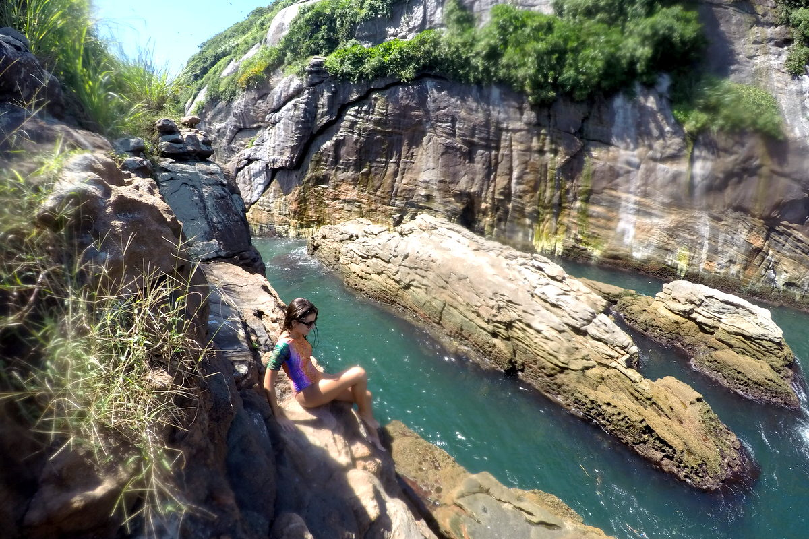
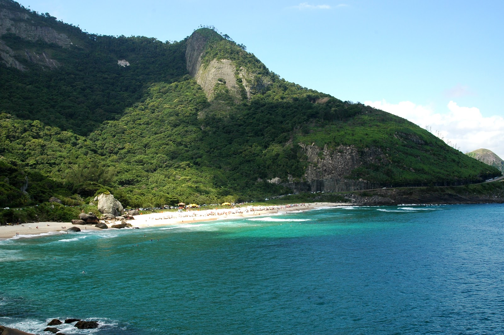

Carlos Felipe Barros
Developer Under Development @ Le Wagon
Electronic Trading specilalist looking for new skills!
Spots in Rio

|
Pedra da Gavea"Pedra da Gávea is one best trails in Rio de Janeiro. From its summit you can spot the whole town and even see Niteroi, in the other side of Guanabara Bay. Its a 844 meters high, monolithic rock in the middle of the Tijuca Forest, considered one of the worlds highest mountains directly rising from the borders of the ocean." |
|  |
Tijucas Islands"Tijucas Islands are a small archipelago, 2,5km from the coast of Barra da Tijuca beach which makes it a really nice 40 min Stand Up paddle when the waves and wind are calm. The islands have crystal water, the rocks are easy to climb and perfect to rest" |
|  |
Prainha"Prainha is one of the few beachs in Rio that are in the middle of a natural reserve area, making it a perfect beach getaway. Its an hour drive from "Zona Sul" and through the ride you get to pass by prety much all of Rios main beachs suchs as Sao Conrado, Barra da Tijuca, Reserva, Recreio and Macumba. A nice plan is to go there and then eat at "Bira de Guaratiba", a great place to have "Moqueca"" |